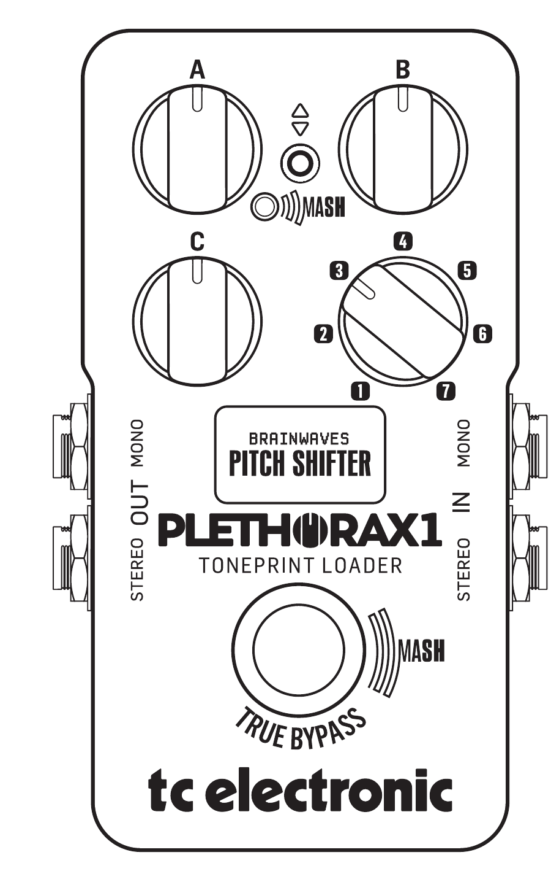
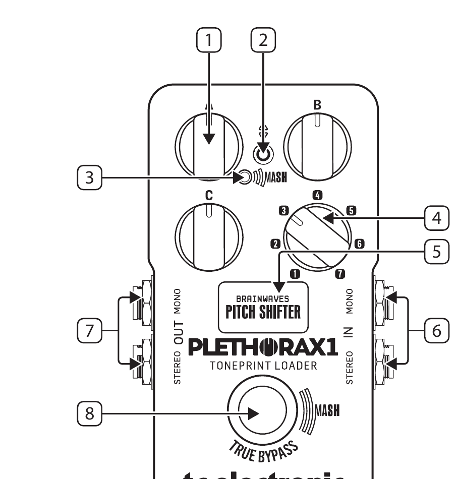
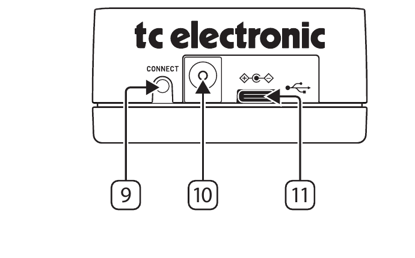

PLETHORA X1
Multi-model TonePrint loader pedal with 7 effect slots and MASH footswitch — User Manual

Safety Instruction
- Read these instructions.
- Keep these instructions.
- Heed all warnings.
- Follow all instructions.
- Do not use this apparatus near water.
- Clean only with dry cloth.
- Do not block any ventilation openings. Install in accordance with the manufacturer's instructions.
- Do not install near any heat sources such as radiators, heat registers, stoves, or other apparatus (including amplifiers) that produce heat.
- Use only attachments/accessories specified by the manufacturer.
- Use only with the cart, stand, tripod, bracket, or table specified by the manufacturer, or sold with the apparatus. When a cart is used, use caution when moving the cart/apparatus combination to avoid injury from tip-over.
- Correct disposal of this product: This symbol indicates that this product must not be disposed of with household waste, according to the WEEE Directive (2012/19/EU) and your national law. This product should be taken to a collection center licensed for the recycling of waste electrical and electronic equipment (EEE). The mishandling of this type of waste could have a possible negative impact on the environment and human health due to potentially hazardous substances that are generally associated with EEE. At the same time, your cooperation in the correct disposal of this product will contribute to the efficient use of natural resources. For more information about where you can take your waste equipment for recycling, please contact your local city office, or your household waste collection service.
- Do not install in a confined space, such as a book case or similar unit.
- Do not place naked flame sources, such as lighted candles, on the apparatus.
Contents
Safety Instruction
Legal Disclaimer
Limited Warranty
Introduction
Controls
Getting Started
TonePrints
More on TonePrints
ARTIST TonePrints
Create Your Own TonePrints
Transferring TonePrints to Your PLETHORA X1
Bluetooth Pairing
Kill-dry ON/OFF
True Bypass and Buffered Bypass
Parameter Pick-up
Legal Disclaimer
Music Tribe accepts no liability for any loss which may be suffered by any person who relies either wholly or in part upon any description, photograph, or statement contained herein. Technical specifications, appearances and other information are subject to change without notice. All trademarks are the property of their respective owners. Midas, Klark Teknik, Lab Gruppen, Lake, Tannoy, Turbosound, TC Electronic, TC Helicon, Behringer, Bugera, Aston Microphones and Coolaudio are trademarks or registered trademarks of Music Tribe Global Brands Ltd. © Music Tribe Global Brands Ltd. 2023 All rights reserved.
Limited Warranty
For the applicable warranty terms and conditions and additional information regarding Music Tribe's Limited Warranty, please see complete details online at community.musictribe.com/pages/support#warranty.
Introduction
Plethora X1 is 14 TC Electronic TonePrint pedals in one. On the one hand, it's a multi-effects pedal that allows you to play and experiment with a vast array of effects — on the other hand, it's a customisable multi-purpose tool that can transform into new pedals whenever you grow or make changes to your pedalboard.
Start off by experimenting with the BOARD SELECTOR knob to try out different TonePrint pedals, and then browse each pedal's factory TonePrints with the toggle switch.
Experiment with secondary footswitch functions, which are assigned by holding the FOOTSWITCH while flicking the TOGGLE SWITCH. While experimenting, try A/B Mode as a secondary footswitch function — now when holding down the footswitch, you have access to two separate pedal slots on the selected board.
Tap into the power of the TonePrint App to store artist TonePrints to the pedal and create your very own custom TonePrints - Master TonePrint Level Unlocked!
Controls


1PARAMETER A/B/C - Use these three knobs to adjust effect parameters for the selected pedal.
2TOGGLE SWITCH - 2-way toggle switch for loading factory TonePrints, accessing secondary footswitch functions and bypass settings for the currently selected pedal.
- Toggle up/down to access factory TonePrints for the active pedal.
- Press-and-hold the footswitch while toggling the switch up/down to select secondary footswitch functions and bypass modes.
3MASH LED - MASH LED will light up when the MASH function is engaged by pressing down firmly on the footswitch to activate note expression via the built-in pressure sensor. The LED gets brighter as the footswitch receives more pressure to indicate the modulation strength of the parameters assigned to this function. The parameter feedback via MASH LED varies depending on the selected pedal and secondary footswitch function.
4BOARD SELECTOR - Use this switch to select a BOARD.
| Board | Slot A Factory TonePrint | Slot B Factory TonePrint |
|---|---|---|
| 1 | Hall of Fame 2 Reverb | Hypergravity Compressor |
| 2 | Flashback 2 Delay | Sentry Noise Gate |
| 3 | Sub n Up Octaver | Brainwaves Pitch Shifter |
| 4 | Corona Chorus | Mimiq Doubler |
| 5 | Viscous Vibe | Helix Phaser |
| 6 | Quintessence Harmony | Vortex Flanger |
| 7 | Pipeline Tremolo | Shaker Vibrato |
NOTE: See A/B Mode under secondary footswitch function for how to switch between slot A and B.
5DISPLAY - Shows which effect is currently loaded and the bypass status. When editing the effect parameters via the PARAMETER A/B/C knobs, the DISPLAY shows the current parameter value assigned to the selected knob. The DISPLAY can also show supportive MASH and RAMP animations and tempo input (in BPM).
6AUDIO INPUTS - This pedal has two standard ¼" TS input jacks for stereo operation. If your signal source is mono (e.g., a regular guitar or a mono effect pedal), connect it to the MONO input.
7AUDIO OUTPUTS - This pedal has two standard ¼" TS output jacks for stereo operation. If the next device in the signal chain is mono, connect it to the MONO output.
8FOOTSWITCH (MASH) - The footswitch performs two main functions: FX ON/OFF and secondary footswitch functions.
- To turn the effect ON, tap the footswitch. To turn the effect OFF, tap the footswitch again.
- To activate secondary functions, including MASH, press and hold footswitch.
NOTE: See secondary footswitch function for list of available options.
9CONNECT - Press the Bluetooth connect button to advertise Plethora X1 to nearby iOS and Android devices for wireless connection to the TonePrint App.
10POWER INPUT - Connect a standard pedal size 9 V center negative 250 mA minimum power supply (Not included). We recommend using the TC Electronic PowerPlug 9.
11USB - Connects to your computer for firmware updates and TonePrint editing (see "More on TonePrints").
Getting Started
Secondary Footswitch Functions
Access bypass modes and the secondary footswitch functions menu by pressing the FOOTSWITCH while flicking the TOGGLE SWITCH up or down.
Secondary footswitch functions available:
- MASH: Control effect parameters with the pressure sensitive MASH footswitch.
- A/B Mode: Toggle between slot A and slot B TonePrints for the selected board.
- TAP TEMPO: Tempo input for Flashback 2, Vintage Echo and Pipeline Tap Tremolo FX.
- RAMP: Changes between the two modulation speeds of the VISCOUS VIBE with variable slew rate.
Bypass modes available:
- Latching: FX is toggled ON/OFF.
- Momentary: Effect is ON as long as footswitch is held.
- Momentary + MASH: FX is ON as long as footswitch is held while additional pressure activates MASH expression.
NOTE: Press up or down on the toggle switch to select. Press the footswitch to confirm.
TonePrints
A TonePrint is like a preset for the selected PEDAL.
When loaded, the TonePrint tells the PEDAL what settings to use for all effect parameters and what the mappings are for each knob, MASH footswitch, and so on.
More on TonePrints
On the surface, each TonePrint PEDAL has just three parameter knobs like any normal stompbox. This arrangement keeps things fun and simple during play. But under the hood, there can be hundreds of parameters and options available, which means that each PEDAL's sound can be configured to create a huge array of effects.
PLETHORA X1 comes with a selection of default TonePrints pre-installed, however you add your favorite TonePrint for each pedal slot.
ARTIST TonePrints
TonePrints are available through the free TonePrint App, where you will find pre-made TonePrints that have been meticulously crafted and fine-tuned by some of the world's greatest musical artists in collaboration with the TC tone technicians.
Create Your Own TonePrints
For those of you who like to get deep into sound creation and the crafting of your very own signature effects, you can also create your own unique TonePrints using the TonePrint Editor within the App. Not only does the TonePrint Editor unlock access to hidden effect parameters for sound design, but you can also customize each knob and the MASH footswitch to control up to three parameters simultaneously.
After creating and storing your custom TonePrints in the App, you can then upload your custom TonePrints to PLETHORA X1.
Transferring TonePrints to Your PLETHORA X1
There are two ways of transferring TonePrints to your PLETHORA X1.
- Desktop — You can download a version of the TonePrint App for your desktop computer from the official TC Electronic website. Once downloaded and installed, this app gives you access to the complete online TonePrint library and the TonePrint Editor.
- Connect your computer to your PLETHORA X1 using the included USB cable.
- To transfer a TonePrint to your device, launch the TonePrint App, find PLETHORA X1 in the product list and follow the on-screen instructions.
- Mobile — If you have a smartphone or tablet, download the free TonePrint App from the Apple App Store* or Google Play Store*. Once downloaded and installed, this app gives you access to the complete online TonePrint library and the TonePrint Editor.
- To transfer a TonePrint to your device, launch the TonePrint App, find PLETHORA X1 in the product list and follow the on-screen instructions.
You can start by simply auditioning TonePrints from the library.
Once you find a TonePrint that you like, simply press the "Store To Pedal" button and it will remain in the slot memory, even when you switch the device off.
Use the many TonePrint templates as starting points for your own custom pedal creations.
*Apple App Store is a trademark of Apple Inc. Google Play Store is a trademark of Google, Inc.
Bluetooth Pairing
PLETHORA X1 can be paired via Bluetooth* with a mobile device running the TonePrint App. The TonePrint App can be downloaded from the Apple App Store* or Google Play Store*.
Pairing with a Mobile Device
To pair PLETHORA X1 with your mobile device, follow these steps:
- Make sure Bluetooth is enabled on your mobile device.
- Launch the TonePrint App on your mobile device.
- Go to the Settings menu in the TonePrint App by pressing the small cogwheel in the top right corner of the app window.
- Press the CONNECT button on PLETHORA X1.
- Under BLUETOOTH in the app's Settings menu, select "Connect to a Bluetooth enabled pedal".
- Select PLETHORA X1 from the pop-up list of available Bluetooth devices.
- Congratulations, your device and X1 is now paired!
NOTE: Only one device can be connected to PLETHORA X1 via either USB or Bluetooth at any one time.
*The Bluetooth word mark and logos are registered trademarks owned by Bluetooth SIG, Inc. and any use of such marks is under license. Apple App Store is a trademark of Apple Inc. Google Play Store is a trademark of Google, Inc.
Kill-dry ON/OFF
When you activate Kill-dry, the direct signal is removed from the pedal's output.
Use this mode when you place your TC Electronic effect pedal in a parallel effects loop
- Connect your Plethora X1 to the TonePrint app via USB or Bluetooth
- Once connected, click on the "pencil" icon of the current loaded slot TonePrint to edit settings
- Navigate to the "PRODUCT SETTINGS" tab in the app interface
- Set the global Kill-dry mode to "ON"
NOTE: Instead of a global Kill-dry, you can also use this function on a specific TonePrint only via the router tab of many TonePrint pedals like Hof2 and Flashback 2.
True Bypass and Buffered Bypass
True Bypass completely isolates your guitar signal from the pedal.
Buffered Bypass buffers your guitar signal and will enable reverb trails and delay spill-over.
To select between True Bypass and Buffered Bypass proceed as follows:
- Connect your Plethora X1 to the TonePrint app via USB or Bluetooth
- Once connected, click on the "pencil" icon of the current loaded slot TonePrint to edit settings
- Navigate to the "PRODUCT SETTINGS" tab
- Change the global bypass mode for your pedal to "buffered" bypass mode.
Parameter Pick-up
Since the A, B, and C knobs are shared, parameter pick-up can be useful when saving parameters on different TonePrint slots. When parameter pick-up is turned OFF, the knobs always reflect the parameters for a what-you-see-is-what-you-get functionality. When parameter pick-up is turned ON, the user must "pick up" the parameter where it was saved in order to change the parameter. The Display will indicate the "pick up" position.
To turn parameter pick-up ON/OFF proceed as follows:
- Connect your Plethora X1 to the TonePrint app via USB or Bluetooth
- Once connected, click on the "pencil" icon of the currently loaded slot's TonePrint to edit settings
- Navigate to the "PRODUCT SETTINGS" tab
- Select ON or OFF in the global parameter pick-up setting